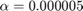
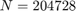
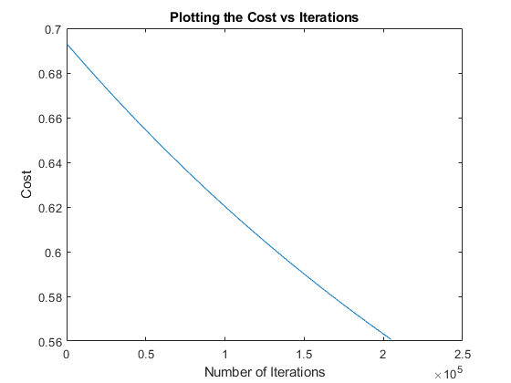
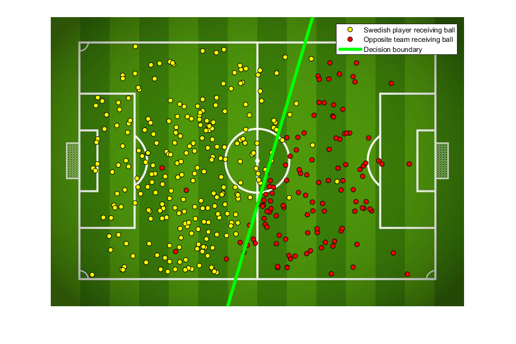

Exercise 4: The Clever Football Coach (Logistic Regression)
Submitted by Prasannjeet Singh
Contents
Q1. The Sigmoid Function
The function sigmoid() is implemented and can be found in this folder. Calling the function with the given data:
ExTwoFunctions.sigmoid([0 1; 2 3])
ans =
0.5000 0.7311
0.8808 0.9526
As can be seen, the solution is concurrent with the one provided in the assignment.
For the term sigmoid(z)-1 to be equal to zero, the value of sigmoid(z) should be equal to 1. We know that , the sigmoid function is asymptotic at y = 1, i.e. it always goes closer to 1, but never touches it. Let us find the number for which matlab interprets the sigmoid function to be 1. For that, we will create an infinite loop and break it when the value of sigmoid function returns 1.
z = 0; loopCondition = true; while loopCondition z = z+1; if ExTwoFunctions.sigmoid(z) == 1 loopCondition = false; end end z
z =
37
Therefore, after z = 37, MATLAB interprets sigmoid(z)-1 as zero.
Q2. Implementing the cost function
The cost function costLogistic() has been implemented and is present in this folder. Now applying the cost function to the given data:
load Data/football.mat; [n,featureCount] = size(football_X); X = [ones(n,1) football_X]; b = ones(featureCount+1,1)*0; % b=[2.8342 -5.2340 -1.8305]'; cost = ExTwoFunctions.costLogistic(X, football_y, b)
cost =
0.6931
Q3. Normalizing the data and implementing the gradient descent
Normalizing:
xNorm = ExTwoFunctions.normalizeData(football_X); xNorm = [ones(n,1) xNorm];
Gradient Descent:
The function logisticGradient() has been implemented and can be found in this folder.
Q4. Training the data using Gradient Descent.
a = 0.000005; [bGradient, costArray, N] = ExTwoFunctions.logisticGradient(xNorm,football_y,a); N
N =
204728
Summarizing:
- 
- 
Plotting the cost function below:
hFig = figure(4); plot(costArray(30:end,1), costArray(30:end,2)); title('Plotting the Cost vs Iterations'); xlabel('Number of Iterations'); ylabel('Cost'); snapnow; close(hFig);
Q5. The decision boundary
hFig = figure(5); mu = mean(football_X); sigma = std(football_X); plotFootball(football_X, football_y, bGradient, mu, sigma); snapnow; close(hFig);
Q6. Training Error
Finding both training error and accuracy below
trainingError = sum(((ExTwoFunctions.sigmoid(([ones(n,1) ExTwoFunctions.normalizeData(football_X)]) * bGradient))>= 0.5) ~= football_y) accuracy = (n - trainingError)*100/n
trainingError =
14
accuracy =
96.2264
Summarizing:
- Training Error = 14
- Accuracy = 96.2264